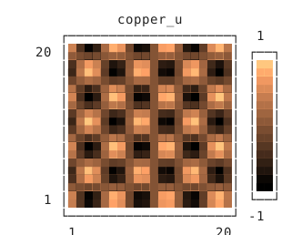
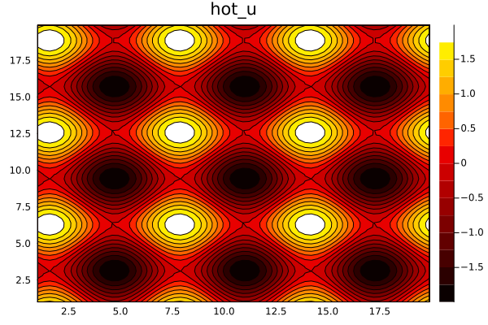
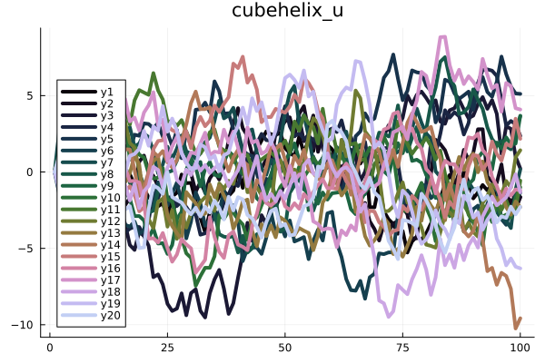
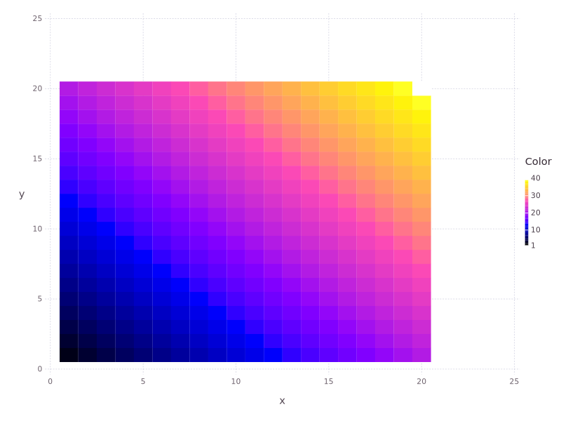
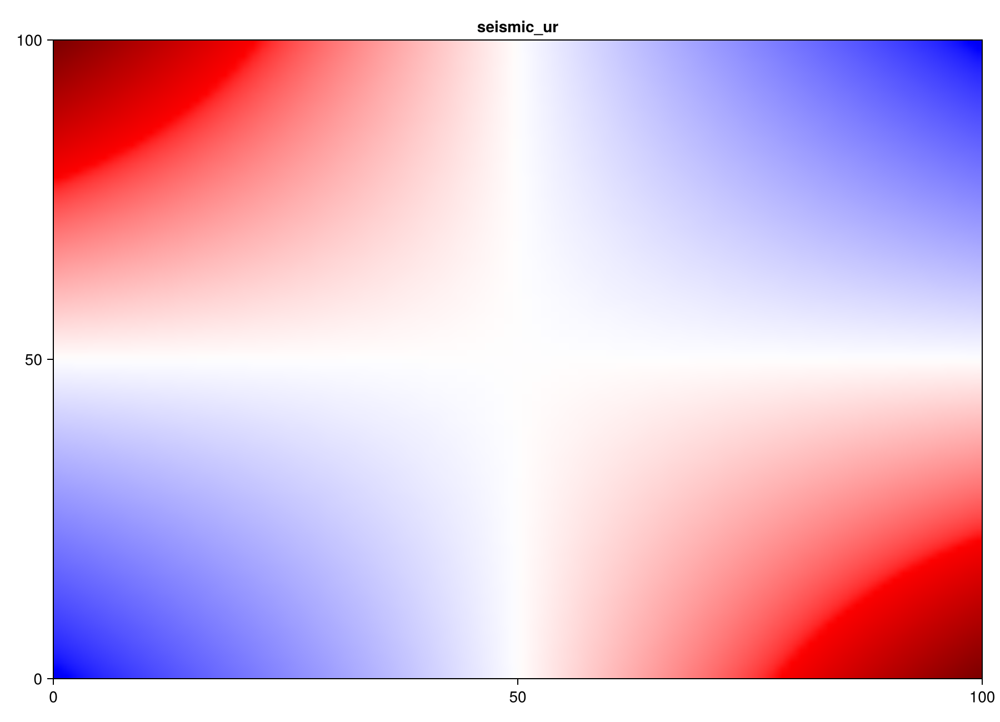
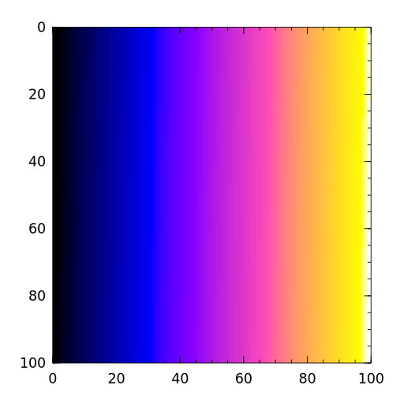
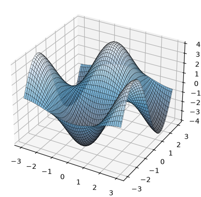

Plotting with EHTColorSchemes
EHTColorSchemes returns standard ColorSchemes.ColorScheme values. See the ColorSchemes.jl documentation for its general API and the upstream ehtplot colormap notebook for map provenance and transformations. Every example below uses exact table colors from this package in its own plotting environment and process.
UnicodePlots.jl
using EHTColorSchemes
using UnicodePlots
scheme = colorscheme(:copper_u)
UnicodePlots.truecolors!()
plot = heatmap([sin(x) * cos(y) for x in 1:20, y in 1:20];
title = "copper_u",
colormap = [(color.r, color.g, color.b) for color in scheme.colors])
show(IOContext(stdout, :color => true), MIME("text/plain"), plot)
Plots.jl
The ColorSchemes.jl guide demonstrates a filled contour and a multi-series palette separately. This profile uses the same plot types with hot_u and cubehelix_u.
Filled contour
using EHTColorSchemes
using Plots
x = 1:0.3:20
scheme = colorscheme(:hot_u)
fig = contour(x, x, (x, y) -> sin(x) + cos(y);
fill = true, c = cgrad(scheme.colors), title = "hot_u")
savefig(fig, "plots-contour.png")
Multi-series palette
using EHTColorSchemes
using Plots
scheme = colorscheme(:cubehelix_u)
palette = get.(Ref(scheme), range(0.05, 0.85; length = 20))
fig = plot(Plots.fakedata(100, 20); w = 4,
background_color = :white, palette,
title = "cubehelix_u")
savefig(fig, "plots-palette.png")
Gadfly
using Cairo, ColorSchemes, EHTColorSchemes, Gadfly
scheme = colorscheme(:gnuplot2_u)
x = repeat(collect(1:20), inner = [20])
y = repeat(collect(1:20), outer = [20])
fig = plot(x = x, y = y, color = x + y, Geom.rectbin,
Scale.ContinuousColorScale(p -> ColorSchemes.get(scheme, p)))
draw(PNG("gadfly.png", 800px, 600px), fig)
Makie
The ColorSchemes.jl pattern passes a table's colors vector directly to the colormap keyword. seismic_ur is the generated reverse of the exact seismic_u table.
using CairoMakie
using EHTColorSchemes
coordinates = LinRange(-1, 1, 100)
scheme = colorscheme(:seismic_ur)
fig = Figure(; size = (900, 650))
axis = Axis(fig[1, 1], title = "seismic_ur")
image!(axis, coordinates .* coordinates'; colormap = scheme.colors)
save("makie-seismic-ur.png", fig)
The table catalog is generated from the public inventory. Numbered variants are omitted only to keep this overview legible.
catalog_names = filter(name -> !occursin(r"_\d", String(name)), scheme_names())
rows = cld(length(catalog_names), 2)
fig = Figure(; size = (1500, 40 * rows + 100))
for (index, name) in enumerate(catalog_names)
row, column = mod1(index, rows), cld(index, rows)
axis = Axis(fig[row, column], title = String(name))
image!(axis, reshape(colorscheme(name).colors, :, 1))
hidedecorations!(axis)
end
save("eht-palettes.png", fig)Winston
The ColorSchemes.jl Winston guide has direct-table and densely sampled examples. Both use gnuplot2_u here.
using EHTColorSchemes
using Winston
scheme = colorscheme(:gnuplot2_u)
Winston.colormap(scheme.colors)
Winston.imagesc(reshape(1:10000, 100, 100))
Winston.savefig("winston.png")
using ColorSchemes
smooth = [ColorSchemes.get(scheme, value) for value in 0:0.001:1]
Winston.colormap(smooth)
Winston.imagesc(reshape(1:10000, 100, 100))
Winston.savefig("winston-smooth.png")PyPlot
This profile follows the ColorSchemes.jl PyPlot 3D surface example with Blues_lusr, the generated reverse of Blues_lus.
using EHTColorSchemes
using PyPlot
scheme = colorscheme(:Blues_lusr)
n = 100
x = range(-3, 3; length = n); y = range(-3, 3; length = n)
xgrid, ygrid = repeat(x', n, 1), repeat(y, 1, n)
z = [2 * sin(x[i]) * 2 * cos(y[j]) for i in 1:n, j in 1:n]
fig = figure("pyplot_surfaceplot", figsize = (7, 5))
axis = fig.add_subplot(1, 1, 1; projection = "3d")
axis.plot_surface(xgrid, ygrid, z; rstride = 2, cstride = 2,
edgecolors = "k", cmap = ColorMap(scheme.colors), alpha = 0.8, linewidth = 0.25)
savefig("pyplot.png", bbox_inches = "tight", pad_inches = 0)
close(fig)
PythonPlot
PythonPlot uses PythonCall rather than PyCall. It uses the same 3D surface data, plot_surface arguments, and ColorMap(Blues_lusr.colors) as the PyPlot example. Julia's semicolon keyword syntax is required for PythonCall method calls. Its isolated CondaPkg environment provides Matplotlib.
ENV["MPLBACKEND"] = "Agg"
using EHTColorSchemes
using PythonPlot
scheme = colorscheme(:Blues_lusr)
n = 100
x = range(-3, 3; length = n); y = range(-3, 3; length = n)
xgrid, ygrid = repeat(x', n, 1), repeat(y, 1, n)
z = [2 * sin(x[i]) * 2 * cos(y[j]) for i in 1:n, j in 1:n]
fig = figure("pythonplot_surfaceplot", figsize = (7, 5))
axis = fig.add_subplot(1, 1, 1; projection = "3d")
axis.plot_surface(xgrid, ygrid, z; rstride = 2, cstride = 2,
edgecolors = "k", cmap = ColorMap(scheme.colors), alpha = 0.8, linewidth = 0.25)
fig.savefig("pythonplot.png", bbox_inches = "tight", pad_inches = 0)
plotclose(fig)